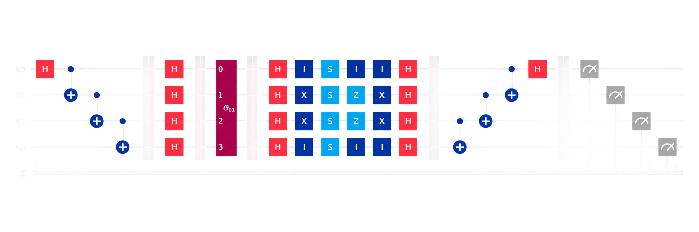

Undergraduate Research / Quantum Error Detection
Lightweight quantum error detection for Grover's search
A reproduction and analysis of quantum error detection for Grover's search, building on Pokharel and Lidar (2024). The work encodes a two-qubit Grover search in the [[4,2,2]] error-detecting code and post-selects on trivial syndromes to improve success probability under noise. Dynamical decoupling and measurement-error mitigation, used in the original, were excluded so as to isolate the effect of error detection alone.
The code
The [[4,2,2]] code is the smallest stabilizer code that detects any single-qubit error. It encodes two logical qubits into four physical qubits, with stabilizers
$$S_1 = XXXX, \qquad S_2 = ZZZZ.$$
The logical operators are $\overline{X}_1 = XIXI$, $\overline{X}_2 = XXII$, $\overline{Z}_1 = ZZII$, and $\overline{Z}_2 = ZIZI$. The encoding unitary prepares the logical zero as a GHZ state,
$$U_\text{enc}\lvert 0000\rangle = \tfrac{1}{\sqrt{2}}\left(\lvert 0000\rangle + \lvert 1111\rangle\right) = \lvert\overline{00}\rangle,$$
and the four logical basis states — the states the encoded Grover circuit searches over — are
$$\lvert\overline{00}\rangle = \tfrac{\lvert 0000\rangle + \lvert 1111\rangle}{\sqrt2},\quad \lvert\overline{01}\rangle = \tfrac{\lvert 0011\rangle + \lvert 1100\rangle}{\sqrt2},\quad \lvert\overline{10}\rangle = \tfrac{\lvert 0101\rangle + \lvert 1010\rangle}{\sqrt2},\quad \lvert\overline{11}\rangle = \tfrac{\lvert 0110\rangle + \lvert 1001\rangle}{\sqrt2}.$$
Encoded circuit and post-selection
The encoded circuit prepares the logical zero, applies the logical Grover operations for a given marked state, then decodes before measurement. The decoder maps the four measured bits to two syndrome bits and two logical bits,
$$s_1 = b_1, \quad s_2 = b_2 \oplus b_4, \qquad z_1 = b_2, \quad z_2 = b_2 \oplus b_3.$$
Runs with $(s_1, s_2) \neq (0,0)$ indicate a detected error and are discarded; the remaining runs give the logical outcome $(z_1, z_2)$. Because single-qubit faults dominate on this hardware and the code detects exactly those, post-selection removes most of the error. The encoded circuit's accuracy stays nearly flat as noise increases, while the unencoded circuit degrades steadily.

Noise models and error tomography
Circuits were run under three noise models: a layout-free model with identical qubits, a model coupling the two-qubit error rate to the single-qubit rate, and a calibrated model of a seven-qubit device with its physical connectivity. Comparing them separates the benefit of error detection from the effect of qubit layout. Algorithmic error tomography and a chi-squared test on the correct-versus-failed counts show that the device's connectivity concentrates errors on the most heavily connected qubits, an effect the layout-free model does not capture.
Joint work with Vedant Agarwal and Bradley Arias, UC Berkeley.
References
- B. Pokharel and D. A. Lidar, “Better-than-classical Grover search via quantum error detection and suppression,” npj Quantum Inf. 10, 23 (2024).
- L. Vaidman, L. Goldenberg, and S. Wiesner, “Error prevention scheme with four particles,” Phys. Rev. A 54, R1745 (1996).
- M. A. Nielsen and I. L. Chuang, Quantum Computation and Quantum Information (Cambridge University Press, 2010).